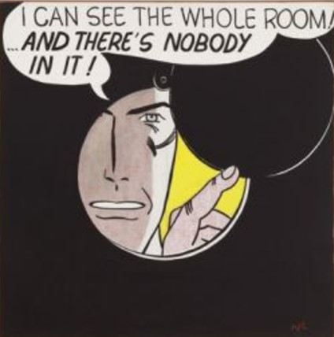

Above is an unseen opening <main> tag, from Step 67.
Below is a <blockquote> example, from Step 80:
Nor did Henry Louis Mencken say, precisely: “No one ever went broke underestimating the intelligence of the American public.”
What Mencken (1880-1956) did write, in the Sept. 19, 1926 edition of the Chicago Daily Tribune, was: “No one in this world, so far as I know — and I have searched the records for years, and employed agents to help me — has ever lost money by underestimating the intelligence of the great masses of the plain people. Nor has anyone ever lost public office thereby.”
This line represents content within a <paragraph> tag, from Step 57.
Below is an <image> tag & its content, from Step 67:
This is an H1 Header, from Step 57.
This is an H3 Header, from Step 57.
This is an H6 Header, from Step 57.
This is an implicitly linked "Funny dog" image (meme, really), from Step 74.
This is an explicitly linked "Mind Bending" image, from Step 75.
{kind=link}
Below is an embedded YouTube video, from Step 80: